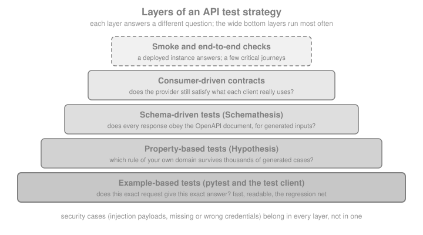

API Contract & Property-based Testing
|
This content was generated with the assistance of AI and should be verified against the official documentation before being relied on in production. |
This page is written against Flask 3.1.3, Werkzeug 3.1.9, flask-smorest 0.47.0, Schemathesis 4.29.4, Hypothesis 6.168.5, pytest 9.1.1 and Python 3.13, checked on 2026-10-07; every Python example was executed with those versions, through Flask’s test client or against a loopback server. Flask 3.2 is not released yet and changes nothing described here. An example-based test checks the cases its author thought of. An API fails on the cases nobody thought of: the empty string, the title one character over the limit, the second delete, the id that is handed out twice. The two tools of this page generate those cases. Schemathesis reads the OpenAPI document that the previous page produces and attacks the running API with requests derived from it, checking every response against the same document (contract testing). Hypothesis generates inputs for properties that you state about your own code (property-based testing), and Schemathesis is built on it. The page builds one small Bookshelf API, finds real bugs in it with each tool, and ends with a test strategy, security tests and the pitfalls of generated tests. Flask ships no such tooling: both libraries are independent projects that talk to a Flask application through its WSGI interface or over HTTP.
Why Test the Contract and the Properties
A Flask view is plain Python, so nothing stops it from returning a body that its own documentation does not describe,
from answering 500 on an input the validators let through, or from forgetting an Allow header. The OpenAPI
document (see OpenAPI & API Documentation) says what the API
promises; the tests of this page check that the promise is kept.
| Technique | Question it answers | Typical finding |
|---|---|---|
Example-based test |
Does this exact request give this exact answer? |
A regression in a behaviour you already specified |
Property-based test (Hypothesis) |
Does a rule of my domain hold for every input the generator can build? |
An id handed out twice after a delete; a slug function that breaks on a superscript digit |
Schema-driven contract test (Schemathesis) |
Does every response conform to the OpenAPI document, for every input the document allows (and for some it forbids)? |
A |
Stateful test |
Does a sequence of calls keep working, with real ids flowing from one call to the next? |
A failure reachable only after a resource exists |
Contract testing is checking that a provider and its consumers agree on an interface. In Microservice APIs (Manning) the test chapter pairs the OpenAPI document with Dredd and Hypothesis-style generation to do it. The idea is right and still current; the tool is not, as the end of the page explains.

The Bookshelf API Under Test
The examples use a deliberately small Bookshelf API written with flask-smorest and marshmallow (the stack of the
previous page). It has a collection, an item, a protected delete and a computed endpoint. The OpenAPI document declares
an ApiKeyAuth security scheme, an operationId on the item operations, and an OpenAPI link from the response of the
POST to the item GET; the stateful tests use these later. The key is read from the application configuration and
generated with secrets.token_hex(); nothing is hardcoded.
The first draft below contains three bugs on purpose. Read it as a reviewer would, then see which tool finds which bug.
# bookshelf_api.py
import hmac
import secrets
import marshmallow as ma
from flask import Flask, current_app, request
from flask.views import MethodView
from flask_smorest import Api, Blueprint, abort
class BookSchema(ma.Schema):
class Meta:
unknown = ma.RAISE
id = ma.fields.Int(dump_only=True)
title = ma.fields.Str(required=True, validate=ma.validate.Length(min=1, max=120))
pages = ma.fields.Int(validate=ma.validate.Range(min=1, max=10000), load_default=1)
class BookQuerySchema(ma.Schema):
q = ma.fields.Str(validate=ma.validate.Length(max=50))
class PaceSchema(ma.Schema):
per_day = ma.fields.Int(load_default=20, validate=ma.validate.Range(min=0))
blp = Blueprint("books", __name__, url_prefix="/books", description="Books")
BOOKS: dict[int, dict] = {}
AUTH = [{"ApiKeyAuth": []}]
def require_api_key() -> None:
sent = request.headers.get("X-Api-Key", "")
if not hmac.compare_digest(sent, current_app.config["API_KEY"]):
abort(401, message="Missing or invalid API key")
@blp.route("/")
class Books(MethodView):
@blp.arguments(BookQuerySchema, location="query")
@blp.response(200, BookSchema(many=True))
def get(self, args):
q = args.get("q", "").lower()
return [b for b in BOOKS.values() if q in b["title"].lower()]
@blp.doc(responses={201: {"links": {"GetBook": {
"operationId": "getBook", "parameters": {"book_id": "$response.body#/id"}}}}})
@blp.arguments(BookSchema)
@blp.response(201, BookSchema)
def post(self, data):
book = {"id": len(BOOKS) + 1, **data}
BOOKS[book["id"]] = book
return book
@blp.route("/<int:book_id>")
class BookItem(MethodView):
@blp.doc(operationId="getBook")
@blp.response(200, BookSchema)
@blp.alt_response(404, description="No such book")
def get(self, book_id):
if book_id not in BOOKS:
abort(404, message="No such book")
return BOOKS[book_id]
@blp.doc(operationId="deleteBook", security=AUTH)
@blp.response(204)
@blp.alt_response(401, description="Missing or invalid API key")
@blp.alt_response(404, description="No such book")
def delete(self, book_id):
require_api_key()
if BOOKS.pop(book_id, None) is None:
abort(404, message="No such book")
@blp.route("/<int:book_id>/reading-time")
class ReadingTime(MethodView):
@blp.arguments(PaceSchema, location="query")
@blp.response(200)
@blp.alt_response(404, description="No such book")
def get(self, args, book_id):
if book_id not in BOOKS:
abort(404, message="No such book")
days = BOOKS[book_id]["pages"] // args["per_day"]
return {"days": days}
def create_app(api_key: str | None = None) -> Flask:
app = Flask(__name__)
app.config.update(
API_TITLE="Bookshelf",
API_VERSION="v1",
OPENAPI_VERSION="3.1.0",
OPENAPI_URL_PREFIX="/",
OPENAPI_JSON_PATH="openapi.json",
API_KEY=api_key or secrets.token_hex(16),
)
api = Api(app)
api.spec.components.security_scheme(
"ApiKeyAuth", {"type": "apiKey", "in": "header", "name": "X-Api-Key"}
)
api.register_blueprint(blp)
return appSource: flask-smorest: OpenAPI
The doc decorator takes integer keys for status codes in its responses mapping (201, not "201"): a string key
creates a second, bare entry instead of extending the one flask-smorest generated from response. The ApiKeyAuth
scheme is registered on api.spec.components, and security=AUTH on the DELETE operation is what ties it to the
operation. The comparison in require_api_key uses hmac.compare_digest so that response time does not leak the key.
The Baseline: Example-Based Tests
Start with ordinary pytest tests built on the test client of the previous pages (the dedicated testing page of this
section covers the layout in depth). A conftest.py provides the application, a client and
a fresh API key per test, and registers two Hypothesis profiles that the later sections use.
# conftest.py
import os
import secrets
import pytest
from hypothesis import settings
from bookshelf_api import BOOKS, create_app
settings.register_profile("dev", max_examples=50, deadline=None)
settings.register_profile("ci", max_examples=500, deadline=None, derandomize=True)
settings.load_profile(os.getenv("HYPOTHESIS_PROFILE", "dev"))
@pytest.fixture
def api_key():
return secrets.token_hex(16)
@pytest.fixture
def client(api_key):
BOOKS.clear()
app = create_app(api_key)
app.config["TESTING"] = True
return app.test_client()# test_api.py
def test_create_then_fetch(client):
created = client.post("/books/", json={"title": "Dune", "pages": 412})
assert created.status_code == 201
book = created.get_json()
assert client.get(f"/books/{book['id']}").get_json() == book
def test_delete_needs_the_api_key(client, api_key):
book_id = client.post("/books/", json={"title": "Dune"}).get_json()["id"]
assert client.delete(f"/books/{book_id}").status_code == 401
assert client.delete(f"/books/{book_id}", headers={"X-Api-Key": api_key}).status_code == 204
def test_the_document_is_served(client):
document = client.get("/openapi.json").get_json()
assert document["openapi"] == "3.1.0"
assert "/books/{book_id}" in document["paths"]All three pass on the draft, and so would a dozen more written the same way. Their weakness is the one named at the start: every input was chosen by a person.
Schemathesis: Contract Tests from the OpenAPI Document
Schemathesis loads an OpenAPI (or GraphQL) description and, for each operation, uses Hypothesis to generate requests
that satisfy the schema (positive testing) and requests that violate it (negative testing), sends them, and runs a
set of checks on each response. A failing input is shrunk to a minimal one and printed together with a curl
command that reproduces it. It is installed into the test environment; versions before 4.0 had a different Python API
and CLI (see Recent Changes and Where the Books Are Outdated).
pip install schemathesisSource: Schemathesis documentation
The loop runs until the example budget or the time budget is spent. The CLI runs it in four phases: examples
(the example values already written in the document), coverage (deliberate boundary and edge values for every
constraint), fuzzing (random generation) and stateful (multi-step scenarios). The checks are shown in the
following table.
| Check | What it verifies |
|---|---|
|
The status is not a |
|
The status code is one the document declares for the operation |
|
The |
|
Response headers match their declared schemas |
|
The body matches the declared JSON Schema |
|
Input that violates the schema is rejected (a |
|
Input that satisfies the schema is accepted |
|
Omitting a required header is rejected |
|
Methods the document does not declare answer |
|
The |
|
A deleted resource is no longer reachable |
|
A freshly created resource can be fetched |
|
When security is declared, requests without valid credentials are rejected |
|
Responses are faster than a limit; off until you configure a limit |
Source: Schemathesis: Built-in checks
With pytest: from_wsgi and parametrize
For a Flask application the natural entry point is schemathesis.openapi.from_wsgi(path, app): requests go straight
to the WSGI callable, with no server, no port and no network, and the application is the one built by the factory.
@schema.parametrize() turns a test function into one pytest test per API operation, and case.call_and_validate()
sends the generated request and runs the checks. Credentials are supplied by an auth provider registered on the schema:
Schemathesis asks it for a value (get) and applies it to each case (set). Registering it, rather than passing a
fixed header, lets the ignored_auth check also send requests without credentials.
# schema_setup.py
import secrets
import schemathesis
from bookshelf_api import create_app
API_KEY = secrets.token_hex(16)
app = create_app(API_KEY)
schema = schemathesis.openapi.from_wsgi("/openapi.json", app)
@schema.auth()
class ApiKeyAuth:
def get(self, case, ctx):
return API_KEY
def set(self, case, data, ctx):
case.headers = case.headers or {}
case.headers["X-Api-Key"] = data# test_contract.py
from schema_setup import schema
@schema.parametrize()
def test_api_contract(case):
case.call_and_validate()Running it against the first draft fails the three operations that accept GET:
- Unsupported methods
TRACE returned 405 without required `Allow` header
Add `Allow` header listing supported methods (required by RFC 9110)
[405] Method Not Allowed:
`{"code":405,"status":"Method Not Allowed"}`
Reproduce with:
curl -X TRACE -H 'X-Api-Key: [Filtered]' --insecure http://localhost/books/0
FAILED test_contract.py::test_api_contract[GET /books/]
FAILED test_contract.py::test_api_contract[GET /books/{book_id}]
FAILED test_contract.py::test_api_contract[GET /books/{book_id}/reading-time]
3 failed, 2 passed in 1.46sThis is a real defect that no example test would have looked for. Werkzeug’s MethodNotAllowed carries the list of
valid methods, but flask-smorest’s error handler builds its own JSON response from the status and message and drops the
Allow header. RFC 9110 requires the header on every 405. The fix is a more specific handler (Flask picks the handler
registered for the most specific class), shown in the diff in Fixing the Three Bugs.
The @schema.parametrize() decorator accepts filters, so a slow or destructive operation can be left out or run with
other settings: schema.include(method="POST").parametrize(), schema.exclude(path_regex="^/admin"). Hypothesis
settings stack on top, for example @settings(max_examples=500) under the decorator.
Stateful tests: ids that flow between calls
The tests above send independent requests. After the 405 fix they all pass, yet the API still contains a bug:
GET /books/{book_id}/reading-time?per_day=0 raises ZeroDivisionError. The stateless run never sees it because
the generated book_id almost never names an existing book, so the view answers 404 before it divides. Reaching the
division needs a sequence: create a book, then ask for its reading time.
Schemathesis builds such sequences from the document’s links. An OpenAPI link says that a value in one response
($response.body#/id) is the input of another operation (getBook, parameter book_id); the example application
declares one on POST /books/. Where no link is declared, Schemathesis infers one from matching parameter names and
response fields (the CLI report shows 9 inferred below). In pytest the state machine is generated from the schema:
# test_stateful.py
from hypothesis import settings
from schema_setup import schema
TestBookshelfWorkflow = schema.as_state_machine().TestCase
TestBookshelfWorkflow.settings = settings(
TestBookshelfWorkflow.settings, max_examples=50, stateful_step_count=4
)stateful_step_count bounds the calls in one scenario and max_examples the number of scenarios. After the Allow
fix, this test fails with the bug the stateless run could not reach:
E ZeroDivisionError: integer division or modulo by zero
E curl -X GET -H 'X-Api-Key: [Filtered]' 'http://localhost/books/7/reading-time?per_day=0'
bookshelf_api.py:85: ZeroDivisionErrorThrough from_wsgi an unhandled exception propagates into the test; against a running server the same bug is reported
by the not_a_server_error check as a 500. The cause is in the schema, not in the view: the marshmallow field allows
per_day=0 (Range(min=0)) and the view divides by it. The OpenAPI document generated from that field says
minimum: 0, so Schemathesis was right to try it. The fix is Range(min=1).
The Schemathesis Command Line
The same engine runs from the shell against a deployed or locally started instance. The CLI loads the document from a URL or a file, and the application must be running (use a development server on loopback, or a staging deployment; see the security section before pointing it anywhere else).
# terminal 1: the application, with a key from the environment
export BOOKSHELF_API_KEY="$(python -c 'import secrets; print(secrets.token_hex(16))')"
python run_server.py
# terminal 2: the whole run
schemathesis run http://127.0.0.1:5055/openapi.json \
-H "X-Api-Key: $BOOKSHELF_API_KEY" --max-examples 25 --seed 1Source: Schemathesis: CLI tutorial
# norun (starts a server)
import os
from werkzeug.serving import run_simple
from bookshelf_api import create_app
run_simple("127.0.0.1", 5055, create_app(os.environ["BOOKSHELF_API_KEY"]), threaded=True)Against the application with only the Allow bug fixed, the coverage phase finds the boundary value directly, and the
stateful phase reports how many links it exercised:
❌ Coverage (in 0.25s)
✅ 4 passed ❌ 1 failed
✅ Fuzzing (in 0.46s)
✅ 5 passed
✅ Stateful (in 1.10s)
Scenarios: 96
API Links: 10 covered / 10 selected / 10 total (9 inferred)
______________________ GET /books/{book_id}/reading-time _______________________
- Server error
[500] Internal Server Error:
`{"code":500,"status":"Internal Server Error"}`
Reproduce with:
curl -X GET -H 'X-Api-Key: [Filtered]' 'http://127.0.0.1:5055/books/2/reading-time?per_day=0'
st replay 89B98Y| Option | Effect |
|---|---|
|
Base URL, required when the schema is a file |
|
Header added to every request (also |
|
Choose checks by name, or |
|
Comma-separated subset of |
|
|
|
Cases per operation in the fuzzing phase |
|
Time budget for the whole run |
|
Reproducible generation |
|
Concurrent workers ( |
|
Select operations |
|
For example |
|
Write reports to |
|
Record accepted failures so a pipeline fails only on new ones |
Source: Schemathesis: CLI reference
The exit code is 0 when every check passed, 1 when a check failed, 2 when Schemathesis could not run (bad
options, schema load failure, no operation matched) and 130 after Ctrl+C. A failure id printed by the run (89B98Y
above) is replayed with st replay 89B98Y, and a stateful-only run is schemathesis run --phases stateful URL. Options
that you always pass can live in a schemathesis.toml file next to the project, with ${VARIABLE} expansion so that
secrets come from the environment rather than the file:
headers = { X-Api-Key = "${BOOKSHELF_API_KEY}" }
[generation]
max-examples = 100In a CI job the sequence is: start the application (or deploy a preview), wait for the document, run
schemathesis run with --report junit and a fixed --seed (or the pytest tests with the ci Hypothesis profile),
publish the report. The exit code is the gate.
Configuration, Negative Testing and Custom Checks
In Python the same options come from a Config passed to the loader. This example sends valid and invalid data, caps
the number of examples, supplies the key from the config instead of an auth class, and registers a custom check that
every error response is JSON:
# test_custom.py
import secrets
import schemathesis
from bookshelf_api import create_app
API_KEY = secrets.token_hex(16)
config = schemathesis.Config.from_dict({
"headers": {"X-Api-Key": API_KEY},
"generation": {"max-examples": 30, "mode": "all"},
})
schema = schemathesis.openapi.from_wsgi("/openapi.json", create_app(API_KEY), config=config)
@schemathesis.check
def errors_are_json(ctx, response, case):
content_type = response.headers.get("content-type", [""])[0]
if response.status_code >= 400 and not content_type.startswith("application/json"):
raise AssertionError(f"{response.status_code} without a JSON body")
@schema.include(method="POST").parametrize()
def test_post_only(case):
case.call_and_validate(checks=[errors_are_json])Three details matter. Schemathesis' Response holds each header as a list of values, hence the [0]. A check
registered with @schemathesis.check is global: it runs for every test that does not list checks explicitly, so
register project-wide rules this way and keep one-off ones in checks=[...]. And negative testing (the mode
setting) makes negative_data_rejection meaningful: the generator deliberately breaks a constraint, such as a title
longer than 120 characters, and the check fails if the API answers with a success. The Meta.unknown = RAISE setting in
the example schema is what makes a body with an extra field a 422 instead of a silent acceptance. An application
served by an ASGI server (Quart, see the Flask section’s async page) uses schemathesis.openapi.from_asgi instead.
Hypothesis: Properties of Your Own Code
Schemathesis can only check what the document states. Rules that are not in the document (an id is never reused, a slug is idempotent, listing agrees with fetching) are properties that you write, and Hypothesis tests them. A property is a statement that holds for every input in a family; a strategy describes the family; Hypothesis draws many examples, and when one fails it shrinks it to the smallest failing input and stores it in a local example database so that the next run tries it first.
A pure function: slugs
A naive slug function written in a minute:
# test_properties.py
import re
from hypothesis import example, given, strategies as st
from bookshelf_api import BookSchema
def naive_slug(title: str) -> str:
return re.sub(r"\W+", "-", title.lower()).strip("-")
def slug(title: str) -> str:
return re.sub(r"[^a-z0-9]+", "-", title.lower()).strip("-")
@given(st.text())
def test_naive_slug_is_url_safe(title):
assert re.fullmatch(r"[a-z0-9-]*", naive_slug(title))
@given(st.text())
def test_slug_is_url_safe_and_idempotent(title):
result = slug(title)
assert re.fullmatch(r"[a-z0-9]+(-[a-z0-9]+)*|", result)
assert slug(result) == resultSource: Hypothesis: Quickstart
The first test fails, and Hypothesis reports the smallest title it found:
title = '¹'
assert re.fullmatch(r"[a-z0-9-]*", naive_slug(title))
AssertionErrorIn Python’s re, \w matches every Unicode letter and digit, including ¹, so the "URL-safe" slug is not ASCII. No
person would have put a superscript digit in an example list. The second function states the intended alphabet
explicitly and passes both properties.
Round trip through a schema
A round trip is the most productive property: loading what you dumped gives back the original. Here it covers the
marshmallow schema with titles of any Unicode text. @example pins a case that must always run, besides the generated
ones.
# test_properties.py (continued)
payloads = st.builds(
dict,
title=st.text(min_size=1, max_size=120),
pages=st.integers(min_value=1, max_value=10000),
)
@given(payloads)
@example({"title": "x", "pages": 10000})
def test_book_schema_round_trip(payload):
schema = BookSchema()
assert schema.dump(schema.load(payload)) == payloadSource: Hypothesis: Strategies
Through the test client: no input may cause a 500
Hypothesis can drive the Flask test client directly. The property is the one the API promises for any JSON body:
201 or 422, never 500, always JSON. st.recursive builds nested JSON values.
# test_properties.py (continued)
import pytest
from bookshelf_api import create_app
json_values = st.recursive(
st.none()
| st.booleans()
| st.integers()
| st.floats(allow_nan=False, allow_infinity=False)
| st.text(),
lambda children: st.lists(children, max_size=4)
| st.dictionaries(st.text(max_size=8), children, max_size=4),
max_leaves=12,
)
@pytest.fixture(scope="module")
def shared_client():
return create_app().test_client()
@given(body=json_values)
def test_post_is_never_a_server_error(shared_client, body):
response = shared_client.post("/books/", json=body)
assert response.status_code in (201, 422)
assert response.is_jsonSource: Hypothesis: Integrations
The fixture is scope="module" for a reason. Hypothesis calls the test body hundreds of times inside one pytest test,
so a function-scoped fixture is built once and not reset between inputs. Hypothesis refuses this by default with a
FailedHealthCheck ("uses a function-scoped fixture"). Either widen the scope, as here, or build the application inside
the test body, or suppress HealthCheck.function_scoped_fixture when the fixture is genuinely stateless. The test client
does not set TESTING, so a real bug would surface as the 500 the assertion reports rather than as a raised exception.
A model of the shelf: state machines
The strongest use is a model-based test. A RuleBasedStateMachine defines rules (add, read, remove) that Hypothesis
combines into random sequences, a plain Python dict as the model of what the API should hold, and invariants checked
after every step. Bundles carry the ids returned by add into the later rules; consumes removes an id once it is
deleted.
# test_properties.py (continued)
import secrets
from hypothesis.stateful import Bundle, RuleBasedStateMachine, consumes, invariant, rule
from bookshelf_api import BOOKS
class BookshelfModel(RuleBasedStateMachine):
books = Bundle("books")
def __init__(self):
super().__init__()
BOOKS.clear()
self.api_key = secrets.token_hex(16)
self.client = create_app(self.api_key).test_client()
self.model: dict[int, dict] = {}
@rule(target=books, title=st.text(min_size=1, max_size=40), pages=st.integers(1, 500))
def add(self, title, pages):
response = self.client.post("/books/", json={"title": title, "pages": pages})
assert response.status_code == 201
book = response.get_json()
assert book["id"] not in self.model, "an id was handed out twice"
self.model[book["id"]] = book
return book["id"]
@rule(book_id=consumes(books))
def remove(self, book_id):
response = self.client.delete(f"/books/{book_id}", headers={"X-Api-Key": self.api_key})
assert response.status_code == 204
del self.model[book_id]
@rule(book_id=books)
def read(self, book_id):
response = self.client.get(f"/books/{book_id}")
assert response.status_code == 200
assert response.get_json() == self.model[book_id]
@invariant()
def listing_matches_the_model(self):
listed = {book["id"] for book in self.client.get("/books/").get_json()}
assert listed == set(self.model)
TestBookshelfModel = BookshelfModel.TestCaseSource: Hypothesis: Stateful testing
On the draft this fails with a four-step counterexample, the shrunk result of a long random run:
AssertionError: an id was handed out twice
books_0 = state.add(pages=1, title='0')
books_1 = state.add(pages=1, title='0')
state.remove(book_id=books_0)
state.add(pages=1, title='0')The draft computes ids as len(BOOKS) + 1. After two adds and the removal of the first book, the next id is 2 again,
and the new book silently overwrites the second one: data loss. Schemathesis could not find this: no schema says that
ids are unique, and its stateful run never compares the listing with a model. The fix is a counter that never goes
back, in the diff below.
Settings that matter
| Setting | Use |
|---|---|
|
Number of inputs per test (default 100); raise it in CI and lower it while developing |
|
Per-example time limit (default 200 ms); set |
|
The same inputs on every run, for reproducible pipelines |
|
Opt out of a health check you understand, for example |
|
Steps per scenario in a state machine |
the example database |
Failures are stored under |
|
Pins a case that always runs, such as a bug you fixed |
The dev and ci profiles registered in conftest.py select among these with the HYPOTHESIS_PROFILE environment
variable. Run pytest from a scratch or project directory, not from a place you do not want a .hypothesis folder.
Fixing the Three Bugs
Each tool found one. The diff turns the draft into the version that passes every test and every CLI run above:
--- bookshelf_api.py (draft)
+++ bookshelf_api.py (fixed)
@@ -1,10 +1,12 @@
import hmac
+import itertools
import secrets
import marshmallow as ma
from flask import Flask, current_app, request
from flask.views import MethodView
from flask_smorest import Api, Blueprint, abort
+from werkzeug.exceptions import MethodNotAllowed
class BookSchema(ma.Schema):
@@ -21,11 +23,12 @@
class PaceSchema(ma.Schema):
- per_day = ma.fields.Int(load_default=20, validate=ma.validate.Range(min=0))
+ per_day = ma.fields.Int(load_default=20, validate=ma.validate.Range(min=1))
blp = Blueprint("books", __name__, url_prefix="/books", description="Books")
BOOKS: dict[int, dict] = {}
+IDS = itertools.count(1)
AUTH = [{"ApiKeyAuth": []}]
@@ -48,7 +51,7 @@
@blp.arguments(BookSchema)
@blp.response(201, BookSchema)
def post(self, data):
- book = {"id": len(BOOKS) + 1, **data}
+ book = {"id": next(IDS), **data}
BOOKS[book["id"]] = book
return book
@@ -96,6 +99,12 @@
API_KEY=api_key or secrets.token_hex(16),
)
api = Api(app)
+
+ @app.errorhandler(MethodNotAllowed)
+ def method_not_allowed(error):
+ allow = ", ".join(sorted(error.valid_methods or []))
+ return {"code": 405, "status": error.name}, 405, {"Allow": allow}
+
api.spec.components.security_scheme(
"ApiKeyAuth", {"type": "apiKey", "in": "header", "name": "X-Api-Key"}
)Source: Schemathesis: Built-in checks
unknown = RAISE, Range and Length stay: they are why the third tool had nothing to report about malformed
bodies. After the change the pytest contract run reports 5 passed, the stateful run passes, and the CLI run with
--checks all reports 585 generated, 585 passed.
Contract Testing Beyond One Repository
Schemathesis tests a provider against its own document. In a system of services, other teams consume that document, and the question becomes whether a change breaks them. Three complementary practices:
-
Provider verification with the published document (this page): the pipeline of the service that owns the API runs Schemathesis against the document it publishes. The document is the contract, so it must be generated from, or checked against, the code, as the previous page recommends.
-
Breaking-change detection: compare the document of the branch with the released one and fail on removed paths, newly required parameters, narrowed enums or changed types. Dedicated OpenAPI diff tools do this; the check belongs in the pull request pipeline, before any consumer sees the change.
-
Consumer-driven contracts: each consumer records the requests it really makes and the responses it relies on, and the provider replays them in its own build. Pact is the established tool for this style. It tests what consumers use rather than everything the document allows, so it complements schema-driven tests instead of replacing them.
Dredd, the tool Microservice APIs uses to run the document against a service, is an archived project: its repository is
read-only and no fixes will come. Use Schemathesis for the same job, and Hypothesis for the rules a
document cannot state. The book’s own tests also configure OpenAPI 3.0.3, while 3.1 is current and is what flask-smorest
0.47 generates when you ask for 3.1.0, as above.
Source: Dredd repository (archived) and Pact documentation
Security Tests
Generated tests are good at the failure classes that need volume: malformed input, boundary values, ignored authentication. They complement, not replace, a review of the security checklist (see Security Considerations) and the OWASP API Security Top 10.
Authentication bypass
Declare the security scheme in the document (as in the example) and the ignored_auth check does the work: it repeats
a request with the credentials removed or invalidated and fails if the operation still succeeds. To see it fail, take a
variant of the application whose DELETE view forgets to call require_api_key:
- API accepts requests without authentication
Expected 401 or 403, got `204 No Content` for `DELETE /books/{book_id}`
Reproduce with:
curl -X DELETE http://127.0.0.1:5055/books/3Two traps follow from how the check works. The credentials must come from an auth provider or the configuration, not
from a header that a hook overwrites on every call, or Schemathesis cannot send the invalid variant (a hook that sets a valid header on every case makes the check report a false failure
on a correct application).
And security: [] on an operation, or no scheme at all, tells the tool the operation is public: an undeclared
protection is invisible to it, so the document must be right first. Authorization (a valid key that must not reach
someone else’s resource) is not covered by any generic check: write those cases by hand, as in the page on
Authorization & Roles.
Injection payloads and hostile input
Schemathesis generates unusual strings, but a curated list of known-hostile ones is cheap and explicit. Parametrize it
and assert the right behaviour: the payload is data, so the application stores and returns it unchanged or rejects it
with a validation error, never a 500, never an echo that an HTML page would execute.
# test_security.py
import pytest
PAYLOADS = [
"' OR '1'='1",
"'; DROP TABLE books; --",
"<script>alert(1)</script>",
"../../etc/passwd",
"{{7*7}}",
"${jndi:ldap://localhost/x}",
"a" * 10_000,
]
@pytest.mark.parametrize("payload", PAYLOADS)
def test_hostile_titles_are_just_data(client, payload):
created = client.post("/books/", json={"title": payload})
assert created.status_code in (201, 422)
if created.status_code == 201:
assert created.get_json()["title"] == payload
found = client.get("/books/", query_string={"q": payload})
assert found.status_code in (200, 422)
assert found.is_json
@pytest.mark.parametrize("headers", [{}, {"X-Api-Key": ""}, {"X-Api-Key": "wrong"}])
def test_delete_rejects_missing_and_wrong_keys(client, headers):
book_id = client.post("/books/", json={"title": "Dune"}).get_json()["id"]
assert client.delete(f"/books/{book_id}", headers=headers).status_code == 401
assert client.get(f"/books/{book_id}").status_code == 200Source: OWASP API Security Top 10, 2023
The example application has no SQL, so the first two payloads only prove that nothing breaks; with a database layer
(see Flask-SQLAlchemy) the same test is a regression net for code that
builds queries from strings. The 10,000-character title is rejected by the Length validator before it reaches storage,
which is the point of validating at the boundary. Reflected cross-site scripting is a rendering problem, covered by
Jinja’s autoescaping in Jinja Templates; a JSON API stores and returns the
string unchanged and the client must encode it on output.
Rules for running generated attacks
-
Run them against a local or disposable instance with disposable data. A fuzzer will create and delete records.
-
Never point them at production, and be careful with shared staging:
--rate-limitand--workers 1keep the load polite. -
Keep real credentials out of reports and CI logs. Schemathesis masks tokens in its output (
[Filtered]above) unless sanitisation is switched off; keep it on. -
Treat a new failure as a bug report: fix it, then pin the reproducing input as a normal example test (or
@example).
Pitfalls
| Pitfall | Remedy |
|---|---|
The document is wrong, so the tests pass or fail for the wrong reason |
Generate the document from the code (flask-smorest) and review diffs of it; a contract test cannot be better than its contract |
Stateless fuzzing never reaches code behind a 404 |
Add the stateful phase, declare links, or seed fixtures that make the interesting ids exist |
Tests are flaky because failures differ per run |
Fix |
Slow runs |
Set |
Shared state between examples (a module-level store, a database) |
Reset it in the machine’s |
Function-scoped fixture with |
|
Credentials hardcoded in test files |
Generate them ( |
A deadline failure on a database-backed property |
|
Treating |
Keep |
Recent Changes and Where the Books Are Outdated
-
Schemathesis 4 reorganised the tool (this page was written against 4.29.4). The loaders moved under
schemathesis.openapi(from_wsgi,from_asgi,from_url,from_path,from_dict); the oldfrom_uriisfrom_url;DataGenerationMethodisGenerationMode. CLI options were renamed:--base-urlis now--url,--hypothesis-max-examplesis--max-examples,--hypothesis-seedis--seed,--data-generation-methodsis--mode,--statefulis--phases=stateful. Tutorials written for version 3 will not run unchanged. -
Dredd is archived. The book’s contract-testing chapter builds on it; use Schemathesis and Hypothesis.
-
OpenAPI 3.1 is current; the book configures 3.0.3. The checks above work with either.
-
RFC 7231 is superseded by RFC 9110. The
Allowrequirement quoted above is in RFC 9110. -
Error payloads should follow RFC 9457 Problem Details, which neither book covers; the contract tests above then check the declared error schema like any other response.
-
Test tooling in the books.
noseis dead andnose2marginal; pytest is the documented approach, withsetup_methodreplacing the removed nose-stylesetuphooks. The function-scoped fixture warning of Hypothesis is a modern caveat that older property-testing tutorials do not mention. -
Flask 3.2 (not released) does not change the test client,
from_wsgior any behaviour used here.
Summary
-
An OpenAPI document produced from the code is the contract; Schemathesis tests the running API against it with generated positive and negative inputs, in pytest through
from_wsgior from the shell withschemathesis run. -
Stateless runs miss bugs behind a missing resource; links (declared or inferred) and the stateful phase reach them.
-
Hypothesis tests rules the document cannot express: pure-function properties, round trips, "never a 500" over any JSON body, and model-based state machines that found the reused-id bug.
-
Credentials come from an auth provider or the environment, never from literals, and the
ignored_authcheck needs the security scheme to be declared. -
Contract testing across teams adds schema diffs and consumer-driven contracts; Dredd is archived, Schemathesis replaces it.
-
Run generated attacks only against disposable instances, pin every found bug as an ordinary regression test, and keep the three layers (examples, properties, schema) in one pytest run.
References
-
Microservice APIs (Manning): the publisher page of the book whose testing chapter this page updates